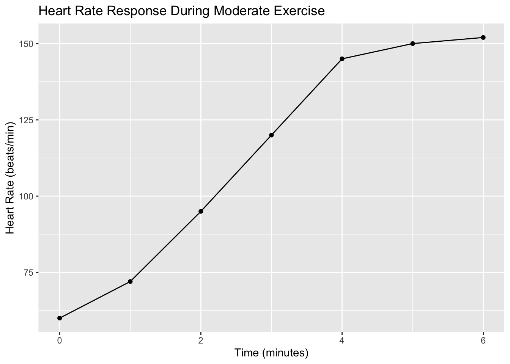

10 + 5[1] 15Welcome to Chapter 2! In Chapter 1, we made the case for using mathematical modeling, particularly with differential equations, to understand the dynamic complexities of physiological systems. We highlighted that to actually implement, solve, and visualize these models, computational tools are essential. For this book, our tool of choice is the R programming environment, coupled with the user-friendly RStudio interface.
This chapter will provide you with a gentle introduction to the R skills you’ll need for modeling. We won’t aim to make you a master programmer, but rather to equip you with the fundamental knowledge and practical R commands necessary to follow along with the modeling examples throughout the rest of the book. We start here with getting the software set up on your computer.
You will need two main software components:
Both R and RStudio are free and open-source, available for Windows, macOS, and Linux operating systems.
First, you need to install the R programming language.
Next, download and install RStudio.
After installing both R and RStudio, open RStudio. You should be able to find it in your applications or programs menu just like any other software.
When RStudio opens, it should automatically detect the R installation on your system. You’ll typically see several panes (windows) within the RStudio interface, including a Console pane where you can type R commands. If RStudio launches without errors, congratulations! You have successfully set up your modeling environment.
While installation is usually a straightforward process, computer configurations can vary. If you encounter issues during installation, consult the official R and RStudio installation guides online, or refer to Appendix A (if included) which might cover common troubleshooting steps.
With R and RStudio successfully installed, you have the essential computational tools ready. You are now prepared to begin exploring the basics of the R language and how we will use it as our workbench to build, solve, and visualize physiological models.
With R and RStudio successfully installed, you now have the essential tools to begin your journey into physiological modeling. Think of RStudio as your laboratory workbench – it’s where you will write the instructions for your models, perform simulations, analyze results, and create visualizations.
This chapter is designed to give you just enough familiarity with R’s fundamental building blocks to get started. We will focus only on the concepts and syntax that are directly relevant to defining, solving, and interacting with differential equation models later in the book. Don’t feel the need to become an R expert overnight; our aim is practical application for modeling physiological dynamics.
Let’s begin by getting acquainted with the RStudio interface and some very basic operations.
When you open RStudio, you will typically see several panes. While the exact layout can be customized, the default setup usually includes:
.R files). Writing code in a script is crucial because it allows you to save your work, easily edit it, and run lines of code repeatedly. This is where you’ll define your differential equations as R functions.deSolve and ggplot2 are ready.Get comfortable identifying these panes. You’ll primarily work by writing code in the Source Editor and running it in the Console, keeping an eye on your variables in the Environment and your plots in the Plots pane.
At its most fundamental level, R can be used like a sophisticated calculator. You can type mathematical expressions directly into the Console and press Enter to see the result.
10 + 5[1] 1525 * 3 - 10[1] 65(100 / 5) + (15 * 2)[1] 50R understands the standard order of operations (parentheses/brackets, exponents, multiplication/division, addition/subtraction – PEMDAS/BODMAS). You can use parentheses to ensure calculations are performed in the order you intend.
Basic arithmetic operators:
+ Addition- Subtraction* Multiplication/ Division^ or ** Exponentiation (e.g., 2^3 is 2 cubed)In modeling, we need to store values like physiological parameters (e.g., clearance rate, sensitivity), initial conditions (e.g., starting drug concentration, initial heart rate), and eventually, the results of our simulations. We do this using variables, also called objects in R.
You assign a value to a variable using the assignment operator, which is typically <- (a less-than sign followed by a hyphen). You can also use =, but <- is considered the standard and often preferred style in R programming.
Let’s create a variable to store a resting heart rate value:
resting_HR <- 65When you run this line in the Console (or run it from a script), you won’t see output in the Console, but you will see resting_HR appear in your Environment pane with the value 65.
Now you can use this variable in calculations:
max_HR <- 220 - 40 # Let's assume age 40
HR_range <- max_HR - resting_HR
print(HR_range)[1] 115You can also assign the result of a calculation to a variable:
BMI <- 75 / (1.80^2) # Mass (kg) / Height (m)^2
print(BMI)[1] 23.14815Variable names in R can contain letters, numbers, underscores (_), and periods (.). They cannot start with a number or underscore. R is also case-sensitive, meaning resting_HR, Resting_HR, and resting_hr would be treated as three different variables. Choose names that are descriptive and easy to read.
R Tip: Use descriptive variable names! clearance_rate is much better than k, especially in complex models.
Every piece of data in R has a data type or class. R handles many types automatically, but being aware of the basic ones is helpful. For physiological modeling, the most important type is numeric.
heart_rate <- 72.5 # Numeric (double)
age <- 30 # Numeric (integer, but often treated as double)
rate_constant <- 0.15 # Numeric (double)" or '). Useful for labels, names, or text output.subject_id <- "Subject_001"
measurement_unit <- "bpm"TRUE or FALSE. Results from logical comparisons (e.g., 5 > 3 is TRUE). Less common in basic ODE definition but fundamental for control flow in programming.is_exercising <- TRUE
is_resting <- FALSEYou can check the class of an object using the class() function:
class(heart_rate)[1] "numeric"class(subject_id)[1] "character"For our physiological modeling, you will primarily work with numeric data types for your state variables, parameters, initial conditions, and time points.
R comes with a vast library of built-in functions to perform operations. You’ve already seen class(). Functions take inputs (arguments) inside parentheses () and perform an action or calculation, returning an output.
Many mathematical functions are readily available and will be useful when defining the rate functions for your differential equations:
sqrt(81) # Square root[1] 9exp(1) # The exponential function e^x (e to the power of 1)[1] 2.718282log(10) # Natural logarithm (base e)[1] 2.302585log10(100) # Logarithm base 10[1] 2sin(pi / 2) # Sine function (input in radians)[1] 1You can use variables within functions, and functions within calculations:
initial_concentration <- 100
decay_rate <- 0.05
time_point <- 10
# Concentration after 10 time units using the exponential decay formula
predicted_concentration <- initial_concentration * exp(-decay_rate * time_point)
print(predicted_concentration)[1] 60.65307This simple example shows how R handles the exact solution of a simple exponential decay model, even before we get to solving differential equations numerically.
Functions can take multiple arguments, separated by commas. For example, round() takes a number and the number of decimal places to round to:
round(BMI, 2)[1] 23.15One of the most important R skills is knowing how to get help. If you know the name of a function but aren’t sure how to use it or what its arguments are, type a question mark followed by the function name in the Console and press Enter:
?expThis will open the help page for the exp() function in the Help pane (bottom-right). Help pages might look technical at first, but they contain essential information about a function’s description, usage (how to call it, its arguments), details, and examples.
As your R code grows, it’s crucial to add comments to explain what you’re doing. This makes your code readable for yourself later and for anyone else who might need to understand your physiological model code. In R, anything on a line after a # symbol is treated as a comment and ignored by R when executing the code.
# This line calculates the maximum heart rate based on age
max_HR <- 220 - 40
# Let's define some parameters for a simple model
clearance_k <- 0.1 # Clearance rate constant (units: 1/time)
initial_C <- 50 # Initial concentration (units: mass/volume)Use comments generously when building your models to explain the physiological meaning of different parts of your code, parameters, and equations.
While the Console is great for quick calculations or trying out single commands, you should write the code for your models, simulations, and plots in the Source Editor (top-left pane). This allows you to save your work as an R script file (with a .R extension).
To create a new R script, go to File > New File > R Script. You can type multiple lines of code in this editor. To run a specific line or a block of lines from the script, place your cursor on the line or select the block and press Ctrl + Enter (on Windows/Linux) or Cmd + Enter (on macOS). The code will be sent to the Console and executed.
Saving your script (File > Save As...) means you don’t lose your work and can easily re-run your entire model or simulation later.
The Environment pane (top-right) shows you the R “workspace” – all the objects (variables, functions) currently loaded in your session. When you close RStudio, it might ask if you want to save your workspace. Saving the workspace (.RData file) saves all the objects in your Environment, so they are there when you open RStudio again in that project directory. However, it is generally better practice for reproducibility to save your scripts (.R files) and ensure that running the script from beginning to end recreates all necessary objects. This way, you have a clear record of how your data and variables were created.
Try It Yourself:
File > New File > R Script).bmi_value variable.Ctrl + Enter (or Cmd + Enter). Observe the variables appearing in your Environment pane.round() function to round your bmi_value to one decimal place.?round in the Console to open the help page for the round() function.File > Save As...).In this section, you’ve taken your first steps with R. You’ve learned how to use RStudio, perform basic arithmetic, store values in variables (objects) of different data types (focusing on numeric), use built-in functions, get help, and write code in a script file. These are the fundamental building blocks. Don’t worry if it feels basic right now. As we progress, you will use these exact skills, combined with R’s powerful packages, to define and work with your physiological differential equation models. In the next section, we’ll introduce how R handles collections of data, which is essential for working with multiple state variables and simulation outputs.
In the previous section, we learned how to use R as a calculator and store single values in variables. However, physiological data and the output from our dynamic models are rarely single numbers. We work with sequences of measurements over time, data collected from multiple subjects, or the simultaneous values of several physiological variables. To handle this, R provides powerful structures for organizing collections of data: vectors, matrices, and data frames. Understanding these is fundamental to working with physiological data and interpreting model outputs in R.
Think of these structures as different ways to organize numbers (and other data types) in a table or list, each suited for slightly different purposes.
The most basic R data structure is a vector. A vector is simply a sequence of elements of the same data type (usually numbers for our purposes). You can think of it as a single row or a single column of numbers.
Physiologically, a vector is a natural way to represent:
You create a vector using the c() function (which stands for “combine” or “concatenate”). You place the elements you want in the vector inside the parentheses, separated by commas.
# A vector of heart rate measurements (beats per minute) at different time points
heart_rates <- c(60, 72, 95, 120, 145, 150, 152)
# A vector of corresponding time points (in minutes)
time_points_min <- c(0, 1, 2, 3, 4, 5, 6)
# A vector of model parameters (e.g., for a simple physiological model)
model_params <- c(0.05, 1.2, 70) # clearance_rate, volume, baseline_valueWhen you print a vector by typing its name in the console, R shows its contents:
heart_rates[1] 60 72 95 120 145 150 152The [1] indicates that the first element shown is the first element of the vector. If a vector is very long, R will print it across multiple lines and indicate the index of the first element on each line.
You can get basic information about a vector:
length(heart_rates) # How many elements are in the vector?[1] 7class(heart_rates) # What type of data is stored in the vector?[1] "numeric"Accessing Elements in a Vector
You can access individual elements or subsets of elements in a vector using square brackets [] after the vector name. The numbers inside the brackets are the indices (positions) of the elements you want, starting with 1 for the first element.
heart_rates[1] # Access the first element[1] 60heart_rates[4] # Access the fourth element (120 bpm)[1] 120heart_rates[c(1, 3, 7)] # Access multiple elements using a vector of indices[1] 60 95 152heart_rates[2:5] # Access a range of elements using the colon operator (:)[1] 72 95 120 145heart_rates[-1] # Access all elements EXCEPT the first one[1] 72 95 120 145 150 152Try It Yourself:
Create a vector called body_weights_kg with the weights of 5 subjects: 70.5, 65.2, 80.1, 72.9, 68.0.
Vector Operations
One of the most powerful features of vectors in R is that arithmetic operations typically work element-wise. This means you can perform calculations on every element of a vector simultaneously without writing a loop.
# Convert heart rates from bpm to beats per second
heart_rates_bps <- heart_rates / 60
print(heart_rates_bps)[1] 1.000000 1.200000 1.583333 2.000000 2.416667 2.500000 2.533333# Add a constant value to all elements (e.g., simulating a measurement offset)
heart_rates_offset <- heart_rates + 5
print(heart_rates_offset)[1] 65 77 100 125 150 155 157If you perform an operation on two vectors of the same length, the operation is applied between corresponding elements:
# Let's say we measured change in blood pressure (mmHg) at the same time points
delta_bp_mmhg <- c(0, 5, 10, 15, 20, 22, 20)
# Calculate a simple physiological stress index (just for illustration)
# Maybe stress_index = HR * delta_BP
stress_index <- heart_rates * delta_bp_mmhg
print(stress_index)[1] 0 360 950 1800 2900 3300 3040You can also use many built-in functions on vectors, which often return a single value summarizing the vector:
mean(heart_rates) # Calculate the average heart rate[1] 113.4286sum(delta_bp_mmhg) # Calculate the total change in BP (not physiologically meaningful here, just an example)[1] 92max(heart_rates) # Find the maximum heart rate[1] 152min(heart_rates) # Find the minimum heart rate[1] 60Vectors are fundamental for storing lists of numbers or single physiological variables over time or across subjects. In modeling, they are also commonly used to define the initial conditions of your model variables and to store model parameters.
A matrix is a two-dimensional collection of elements, arranged in rows and columns, where all elements must be of the same data type. You can think of it as a rectangular table of numbers.
Matrices are useful in R for representing certain mathematical structures (like transformation matrices, if you were doing more complex linear algebra) or sometimes for organizing parameter sets for multiple model runs. However, for typical physiological data management, data frames (discussed next) are usually more flexible and common.
You can create a matrix using the matrix() function. You provide a vector of the data, the number of rows (nrow), and the number of columns (ncol). By default, matrices are filled column by column.
# Create a matrix of physiological data (e.g., HR and BP for 3 time points)
# Let's arrange data as: Col 1 = HR, Col 2 = BP
# Data vector: 60, 120 (HR), 80, 140 (BP)
phys_matrix_data <- c(60, 80, 120, 140, 90, 130) # HR data then BP data
phys_matrix <- matrix(
data = phys_matrix_data,
nrow = 3,
ncol = 2
)
print(phys_matrix) [,1] [,2]
[1,] 60 140
[2,] 80 90
[3,] 120 130But wait, this filled column by column! Let’s specify byrow = TRUE
Correcting matrix creation to fill by row:
phys_matrix_data_byrow <- c(60, 120, # Time 1: HR, BP
80, 140, # Time 2: HR, BP
90, 130) # Time 3: HR, BP
phys_matrix_corrected <- matrix(
data = phys_matrix_data_byrow,
nrow = 3,
ncol = 2,
byrow = TRUE
)
print(phys_matrix_corrected) [,1] [,2]
[1,] 60 120
[2,] 80 140
[3,] 90 130Still not right, data order matters! Let’s arrange the data vector column by column for the default fill:
# Data vector: HR at 3 times, then BP at 3 times
phys_matrix_data_cols <- c(60, 80, 90, # HR at times 1, 2, 3
120, 140, 130) # BP at times 1, 2, 3
phys_matrix_bycol <- matrix(
data = phys_matrix_data_cols,
nrow = 3,
ncol = 2
)
phys_matrix_bycol [,1] [,2]
[1,] 60 120
[2,] 80 140
[3,] 90 130This looks better. Column 1 is HR, Column 2 is BP.
You can access elements, rows, or columns of a matrix using [row, column]. Leave the row or column part blank to select an entire row or column.
phys_matrix_bycol[1, 1] # Element in row 1, column 1 (HR at time 1)[1] 60phys_matrix_bycol[2, ] # Entire second row (HR and BP at time 2)[1] 80 140phys_matrix_bycol[, 1] # Entire first column (HR at all times) - this is a vector![1] 60 80 90Try It Yourself:
Create a matrix named training_load with 4 rows (subjects) and 2 columns (Session 1 Load, Session 2 Load). Fill it with some numerical values (e.g., RPE, weight lifted, arbitrary units).
Matrices are less common for raw experimental data in R compared to data frames, but they might appear when you deal with specific types of model outputs or perform operations that result in a matrix structure.
For organizing most physiological experimental data and for handling the output of ODE solvers in R, the data frame is the most important data structure. A data frame is essentially a list of vectors of the same length, where each vector is a column. Unlike a matrix, different columns in a data frame can have different data types (e.g., one column can be numbers, another can be text, another can be logical values).
Think of a data frame as a spreadsheet or a table in a database, where each column represents a different variable (Time, HeartRate, BloodPressure, SubjectID, Group) and each row represents an observation or a subject at a specific time point.
You create a data frame using the data.frame() function, where each argument is a vector that will become a column. You can name the arguments to set the column names.
# Our earlier vectors
time_points_min <- c(0, 1, 2, 3, 4, 5, 6)
heart_rates <- c(60, 72, 95, 120, 145, 150, 152)
delta_bp_mmhg <- c(0, 5, 10, 15, 20, 22, 20)
subject_id <- c("A", "A", "A", "A", "A", "A", "A") # A character vector
# Create a data frame from these vectors
exercise_data <- data.frame(Time = time_points_min,
HeartRate = heart_rates,
DeltaBP = delta_bp_mmhg,
Subject = subject_id)
exercise_data Time HeartRate DeltaBP Subject
1 0 60 0 A
2 1 72 5 A
3 2 95 10 A
4 3 120 15 A
5 4 145 20 A
6 5 150 22 A
7 6 152 20 AThis data frame clearly organizes our physiological measurements by time point and variable.
Inspecting Data Frames
Before working with a data frame, it’s useful to get a quick overview:
# View the first few rows (useful for large datasets)
head(exercise_data) Time HeartRate DeltaBP Subject
1 0 60 0 A
2 1 72 5 A
3 2 95 10 A
4 3 120 15 A
5 4 145 20 A
6 5 150 22 A# Get summary statistics for each column
summary(exercise_data) Time HeartRate DeltaBP Subject
Min. :0.0 Min. : 60.0 Min. : 0.00 Length:7
1st Qu.:1.5 1st Qu.: 83.5 1st Qu.: 7.50 Class :character
Median :3.0 Median :120.0 Median :15.00 Mode :character
Mean :3.0 Mean :113.4 Mean :13.14
3rd Qu.:4.5 3rd Qu.:147.5 3rd Qu.:20.00
Max. :6.0 Max. :152.0 Max. :22.00 # Get the names of the columns
colnames(exercise_data)[1] "Time" "HeartRate" "DeltaBP" "Subject" # Show the structure and data types of each column
str(exercise_data)'data.frame': 7 obs. of 4 variables:
$ Time : num 0 1 2 3 4 5 6
$ HeartRate: num 60 72 95 120 145 150 152
$ DeltaBP : num 0 5 10 15 20 22 20
$ Subject : chr "A" "A" "A" "A" ...# Show the dimensions (rows, columns)
dim(exercise_data)[1] 7 4Accessing Data Frame Elements, Rows, and Columns
Accessing data in a data frame is similar to matrices and vectors, but with additional convenient methods.
[row, column]: Same as matrices.exercise_data[1, 2] # Heart rate at the first time point[1] 60exercise_data[3, ] # All data for the third time point Time HeartRate DeltaBP Subject
3 2 95 10 Aexercise_data[, 2] # All heart rates (returns a vector)[1] 60 72 95 120 145 150 152$ Operator: This is the most common way to access an entire column by its name. It returns a vector.exercise_data$HeartRate # Get the entire HeartRate column as a vector[1] 60 72 95 120 145 150 152exercise_data$Time[1] 0 1 2 3 4 5 6[, "column_name"]: Another way to access a column by name using the square brackets.exercise_data[, "DeltaBP"] # Get the DeltaBP column[1] 0 5 10 15 20 22 20Adding New Columns
You can easily add new columns to a data frame, often by performing calculations on existing columns.
# Assume RestingBP is 80 mmHg. Calculate AbsoluteBP
exercise_data$AbsoluteBP <- 80 + exercise_data$DeltaBP
# Calculate Heart Rate Reserve (HRR) if max HR is 190
max_hr <- 190
resting_hr <- 60
hrr <- max_hr - resting_hr
exercise_data$HRR_percent <- 100 * (exercise_data$HeartRate - resting_hr) / hrr
print(exercise_data) # View the updated data frame Time HeartRate DeltaBP Subject AbsoluteBP HRR_percent
1 0 60 0 A 80 0.000000
2 1 72 5 A 85 9.230769
3 2 95 10 A 90 26.923077
4 3 120 15 A 95 46.153846
5 4 145 20 A 100 65.384615
6 5 150 22 A 102 69.230769
7 6 152 20 A 100 70.769231Subsetting Data Frames
Selecting specific rows (observations) based on conditions is a common task. You can use logical conditions within the square brackets.
# Select only the rows where HeartRate is greater than 100 bpm
high_hr_data <- exercise_data[exercise_data$HeartRate > 100, ]
print(high_hr_data) Time HeartRate DeltaBP Subject AbsoluteBP HRR_percent
4 3 120 15 A 95 46.15385
5 4 145 20 A 100 65.38462
6 5 150 22 A 102 69.23077
7 6 152 20 A 100 70.76923# Select rows where Time is between 2 and 5 minutes (inclusive)
# Use '&' for 'and'
mid_exercise_data <-
exercise_data[exercise_data$Time >= 2 & exercise_data$Time <= 5, ]
print(mid_exercise_data) Time HeartRate DeltaBP Subject AbsoluteBP HRR_percent
3 2 95 10 A 90 26.92308
4 3 120 15 A 95 46.15385
5 4 145 20 A 100 65.38462
6 5 150 22 A 102 69.23077Notice the comma after the condition exercise_data$HeartRate > 100. This indicates we are selecting rows. If you wanted to select specific rows and specific columns, you would specify both (e.g., exercise_data[exercise_data$Time >= 2, c("Time", "HeartRate")]). Leaving the column part blank selects all columns.
Data Frames and Model Output
Why is understanding data frames so important for this book? Because the standard output from R packages that solve differential equations, like the deSolve package we will use extensively, is a data frame!
When you simulate a physiological model with deSolve, the result will be a data frame where:
You will then use the techniques learned in this section – accessing columns by name ($), selecting specific rows (e.g., for a time window), and using these columns as vectors – to analyze the simulation results and create visualizations.
Try It Yourself:
Using the exercise_data data frame you created:
AbsoluteBP.HRR_percent is greater than 50%.HeartRate for the time points where DeltaBP is exactly 20 mmHg.Vectors, matrices, and data frames are the fundamental structures for organizing data in R. Vectors are sequences of the same type, useful for lists of parameters or single variables over time. Matrices are 2D arrays of the same type. Data frames are the most flexible, allowing columns of different types and serving as the standard format for tabular data, including the crucial time-series output from our differential equation models.
Mastering how to create, inspect, access, and perform basic operations on data frames is a critical step. With these skills, you are well-equipped to handle the experimental data you might want to compare your models against, and crucially, to work with the simulated time courses that your models will produce in R. In the next section, we’ll look at how to get your existing physiological data into R by importing files.
Much of the power of mathematical modeling comes from its ability to help us interpret and understand real-world data. In your research, you collect physiological measurements – heart rate, blood pressure, gas exchange variables, EMG signals, force output, and many others. To compare your model simulations to these experimental results, or to use your data to inform model parameters, you first need to get this data into R. Similarly, after running a model simulation, you might want to save the predicted time course of your variables to a file for later analysis or sharing.
This section will cover the essential skills for importing data from external files into R and exporting data (like your simulation results) from R to files.
As we learned in the previous section, R’s data frame structure is perfectly suited for handling tabular data – the rows represent observations (e.g., time points, subjects), and the columns represent different variables (e.g., Time, HeartRate, VO2, SubjectID). Most physiological data you’ll encounter in spreadsheets or text files can be easily imported into an R data frame.
Before importing or exporting files, it’s crucial to understand R’s working directory. The working directory is the default folder on your computer where R will look for files to read and where it will save files you export.
If you don’t set your working directory, you’ll have to type the full path to your file every time you want to access it, which can be cumbersome and prone to errors. It’s best practice to set your working directory to the folder where your data files are stored for a particular project.
You can check your current working directory using the getwd() function:
getwd()
# [1] "/Users/yourusername/Documents" # Example output - this will vary!You can change your working directory using the setwd() function. Replace "path/to/your/data/folder" with the actual path on your computer:
# Example for macOS/Linux:
setwd("/Users/yourusername/Documents/PhysioModelingProject/Data")
# Example for Windows (note forward slashes or double backslashes):
setwd("C:/Users/yourusername/Documents/PhysioModelingProject/Data")
# OR
setwd("C:\\Users\\yourusername\\Documents\\PhysioModelingProject\\Data")In RStudio, you can also set the working directory using the GUI: Session -> Set Working Directory -> Choose Directory... Navigate to your desired folder and click “Open”. RStudio will automatically generate and run the setwd() command for you in the Console. Using RStudio’s interface is often easier than typing paths manually.
Once you’ve set your working directory, R will look for files in that folder.
Two of the most common formats for sharing tabular data are CSV (Comma Separated Values) and tab-delimited text files. These are plain text files where columns are separated by a specific character (a comma for CSV, a tab for tab-delimited files), and rows are separated by new lines. They can be easily created or exported from spreadsheet programs like Excel or data acquisition software.
Importing CSV Files (.csv)
CSV files are perhaps the most common. In a CSV file, columns are separated by commas. Here’s how to read a CSV file into an R data frame using the read.csv() function:
# Assuming you have a file named "exercise_hr_vo2.csv" in your working directory
# The file might look something like this:
# Time,HR,VO2
# 0,60,0.3
# 1,70,0.8
# 2,90,1.5
# 3,120,2.5
# Read the CSV file into a data frame
my_phys_data <- read.csv("exercise_hr_vo2.csv")By default, read.csv() assumes:
header = TRUE).sep = ",").factors. For data analysis and modeling, converting text into factors can sometimes be problematic or unnecessary. You can often prevent this by adding the argument stringsAsFactors = FALSE.So, a more robust way to read your CSV might be:
my_phys_data <- read.csv("exercise_hr_vo2.csv", header = TRUE, stringsAsFactors = FALSE)After importing, it’s crucial to inspect the data frame to ensure it was read correctly:
head(my_phys_data) # View the first few rows
summary(my_phys_data) # Get summary statistics
str(my_phys_data) # Check the structure and data types of columnsCheck if the column names are correct and if the data types are as expected (e.g., Time, HR, and VO2 should be numeric).
Importing Tab-Delimited Files (.txt, .tsv)
Tab-delimited files are similar to CSV but use tabs (\t) instead of commas to separate columns. You can use the read.table() function with sep="\t" or the convenience function read.delim().
# Assuming you have a file named "subject_data.txt" in your working directory
# The file might look like this:
# SubjectID Age Gender Group
# S1 25 Male Trained
# S2 30 Female Untrained
# S3 28 Male Trained
# Read the tab-delimited file
subject_info <- read.delim("subject_data.txt", header = TRUE, stringsAsFactors = FALSE)
head(subject_info)
str(subject_info)read.delim() is just a wrapper around read.table(file, sep = "\\t", ...) where \\t represents a tab character.
Try It Yourself:
my_exercise_data.csv in a specific folder.setwd() or the RStudio menus.read.csv() to import the data into a data frame in R.head() and summary() to inspect the imported data frame.While base R functions like read.csv() and read.delim() are perfectly functional, the readr package (part of the tidyverse suite) offers faster and more consistent functions like read_csv() and read_delim(). If you work with very large datasets frequently, exploring readr is worthwhile, but the base R functions are sufficient for learning the core concepts.
Importing Data from Excel Files (.xls, .xlsx)
Excel files are ubiquitous in research labs. While not a plain text format, you can still import data directly from Excel files into R, although it requires installing and loading an additional package. The readxl package is a popular and reliable choice.
readxl package: You only need to install a package once on your computer. You need to load it into each R session where you want to use it.install.packages("readxl") # Install the package (only need to do this once)library(readxl) # Load the package into the current R session (do this every time you start a new session and want to use the package)read_excel() function from the readxl package.# Assuming you have a file named "experimental_results.xlsx" in your working directory
# and the data is on the first sheet.
experimental_data <- read_excel("experimental_results.xlsx")If your data is on a specific sheet within the Excel file, you can specify the sheet name or number using the sheet argument:
# Read data from the sheet named "Subject 1 Data"
subject1_data <- read_excel("experimental_results.xlsx", sheet = "Subject 1 Data")
# Read data from the second sheet
subject2_data <- read_excel("experimental_results.xlsx", sheet = 2)Like with text file import, always inspect your data after importing using functions like head(), summary(), and str().
Try It Yourself:
.xlsx file in your working directory.readxl package.read_excel() to import your data into an R data frame.Just as you can import data into R, you can also export data frames (like the results of your model simulations) to files that can be opened in spreadsheet programs or shared with colleagues.
1. Exporting to CSV (.csv)
Use the write.csv() function to save a data frame to a CSV file.
# Assuming 'simulation_output' is a data frame containing your model results
# from a simulation run.
write.csv(simulation_output, "my_simulation_results.csv")By default, write.csv() includes row names in the output file. Usually, you don’t want these automatically generated row numbers from R in your exported data. To prevent this, use the argument row.names = FALSE:
write.csv(simulation_output, "my_simulation_results_no_rownames.csv", row.names = FALSE)2. Exporting to Tab-Delimited Text (.txt)
Use the write.table() function and specify the tab separator (sep="\t") to save a data frame to a tab-delimited file.
# Export the simulation results to a tab-delimited file
write.table(simulation_output, "my_simulation_results.txt", sep = "\t", row.names = FALSE)Try It Yourself:
exercise_data example from the previous section).write.csv() to save this data frame to a CSV file in your working directory. Open the file in a text editor or spreadsheet program to verify it saved correctly.write.table() to save the same data frame to a .txt file. Open it to verify the tab separation.Being able to import and export data is a fundamental skill for using R in research. Importing allows you to bring your experimental physiological data into R data frames, which you can then use for analysis, visualization, and crucially, comparison with your model simulations later on. Exporting allows you to save the output of your models or any processed data frames. With the ability to handle single values, vectors, data frames, and import/export files, you have the basic data manipulation skills needed to start working with R in a research context.
In the next section, we’ll build on this by learning how to create plots – the essential step for visualizing your data and your model’s dynamic outputs.
We’ve covered the basics of R syntax, handling different data types, working with fundamental data structures like vectors and data frames, and importing/exporting your physiological data. Now, we arrive at a critically important aspect of using R for physiological modeling: visualization.
As we discussed in Chapter 1, physiological systems are dynamic, and their behavior unfolds over time. Whether you are analyzing experimental data (like heart rate changes during exercise) or examining the output of a mathematical model simulation (the predicted time course of a variable), seeing the data as a graph is infinitely more informative than looking at a table of numbers. Visualization allows us to quickly grasp trends, patterns, magnitudes of change, and relationships between variables. For dynamic models, plotting the predicted time series is how we actually see the dynamics that the differential equations describe. It’s how we understand what our model is telling us.
R has excellent capabilities for creating graphs. There are two primary systems for plotting in R: Base R Graphics and the ggplot2 package.
plot(), lines(), points(), etc. It’s great for quick, straightforward plots.ggplot2: This is a very popular and powerful package based on the “grammar of graphics”, which provides a more structured and flexible way to build plots layer by layer. It excels at creating complex, publication-quality graphics and works seamlessly with data frames.While Base R graphics are useful for rapid exploratory plotting, we will primarily focus on ggplot2 in this book. This is because ggplot2 is particularly well-suited for handling data in data frames (which is how our model outputs from deSolve will be structured) and offers superior control and flexibility for creating the clear, informative plots necessary for presenting research findings and comparing models to data.
Let’s briefly look at a simple Base R plot, and then we’ll dive into the power of ggplot2.
Using Base R graphics, you can create a simple scatter plot or line plot directly from vectors. Let’s use our time_points_min and heart_rates vectors from the previous section:
# Create a simple scatter plot
plot(time_points_min, heart_rates,
xlab = "Time (minutes)", # Label for the x-axis
ylab = "Heart Rate (bpm)", # Label for the y-axis
main = "Heart Rate During Exercise", # Plot title
pch = 16) # Set the plotting symbol to a solid circle
# Add a line connecting the points
lines(time_points_min, heart_rates, col = "blue", lwd = 2) # col for color, lwd for line widthThis code would generate a scatter plot with points and then overlay a blue line connecting them, creating a basic time series graph. You can see it’s relatively straightforward for simple plots.
ggplot2: Building Plots Layer by Layerggplot2 takes a different approach. It’s based on the idea that any plot can be built by combining different components or layers. The key components are:
aes()): How variables in your data are mapped to visual properties of the plot, such as their position on the x and y axes, color, size, shape, or transparency.geom_ functions): The visual elements used to represent the data, such as points (geom_point), lines (geom_line), bars (geom_bar), histograms (geom_histogram), etc.You build a ggplot2 plot by starting with the ggplot() function, adding layers using the + operator.
First, you need to install and load the ggplot2 package (just like readxl). You only install it once, but you load it in every R session where you want to use it.
install.packages("ggplot2") # Install the package (if you haven't already)library(ggplot2) # Load the package for this sessionNow, let’s recreate our exercise heart rate plot using ggplot2. We’ll use the exercise_data data frame we created earlier, which contains Time and HeartRate columns.
# Start the plot: specify data frame and map Time to x and HeartRate to y
ggplot(data = exercise_data, aes(x = Time, y = HeartRate)) +
geom_point() + # Add a layer of points
geom_line() # Add a layer of linesLet’s break this down:
ggplot(data = exercise_data, aes(x = Time, y = HeartRate)): This is the base layer. We tell ggplot to use exercise_data as the source of data. Inside aes(), we define the aesthetic mapping: map the Time column to the x-axis position and the HeartRate column to the y-axis position.+: This operator is used to add layers or customize elements to the plot object created by the previous line.geom_point(): This layer tells ggplot to draw points for each data point, using the x and y positions defined in the aes() mapping.geom_line(): This layer tells ggplot to draw lines connecting the points, again using the x and y positions.Running this code will produce a plot in the Plots pane. Notice that ggplot2 automatically adds axis labels based on the variable names and creates a simple background.
ggplot2 Plots**To make your plots informative and ready for presentation, you’ll need to customize them. Here are some common customizations:
1. Adding Labels and Title:
Use the labs() function to add a title, subtitles, captions, and customize axis labels or the titles of legends (for colors, shapes, etc.).
ggplot(data = exercise_data, aes(x = Time, y = HeartRate)) +
geom_point() +
geom_line() +
labs(title = "Heart Rate Response During Moderate Exercise",
x = "Time (minutes)",
y = "Heart Rate (beats/min)")
2. Changing Appearance (Color, Size, Line Type, Shape):
You can set fixed aesthetic properties outside the aes() function within a geom_ function, or map these properties to variables inside aes().
Setting Fixed Appearance:
ggplot(data = exercise_data, aes(x = Time, y = HeartRate)) +
geom_point(color = "red", size = 3) + # Set point color to red, size to 3
geom_line(linetype = "dashed", color = "blue", linewidth = 1) + # Dashed blue line, width 1
labs(title = "Heart Rate Response During Moderate Exercise",
x = "Time (minutes)",
y = "Heart Rate (beats/min)")You can use color names (like "red", "blue", "grey") or hexadecimal color codes (like " #FF0000" for red). linetype can be "solid", "dashed", "dotted", etc. size for points, linewidth for lines.
Mapping Appearance to Variables: This is powerful for showing relationships or distinguishing groups/variables on the same plot.
Imagine your data frame had a column indicating if the subject is “Trained” or “Untrained”, or if the measurement was “Simulation” vs “Experimental Data”. You could map this column to color.
To plot multiple variables (like Heart Rate and Absolute Blood Pressure) against Time on the same graph with different colors/lines using ggplot2, it’s best practice to first reshape your data frame into a “long” format. This means instead of having separate columns for HeartRate and AbsoluteBP, you’d have one column for Value and another column indicating the Variable (e.g., “HeartRate” or “AbsoluteBP”). The tidyr package (another tidyverse package) is excellent for this, specifically the pivot_longer() function.
# Install and load tidyr if you haven't
# install.packages("tidyr")
library(tidyr)
# Reshape the data frame to long format for plotting multiple variables
# Exclude Subject and HRR_percent for this example plot
exercise_data_long <- pivot_longer(exercise_data,
cols = c(HeartRate, AbsoluteBP), # Columns to pivot
names_to = "Physiological_Variable", # New column for variable names
values_to = "Value") # New column for values
head(exercise_data_long) # See the new structure# A tibble: 6 × 6
Time DeltaBP Subject HRR_percent Physiological_Variable Value
<dbl> <dbl> <chr> <dbl> <chr> <dbl>
1 0 0 A 0 HeartRate 60
2 0 0 A 0 AbsoluteBP 80
3 1 5 A 9.23 HeartRate 72
4 1 5 A 9.23 AbsoluteBP 85
5 2 10 A 26.9 HeartRate 95
6 2 10 A 26.9 AbsoluteBP 90Now, plot the Value against Time, mapping Physiological_Variable to color:
ggplot(data = exercise_data_long, aes(x = Time, y = Value, color = Physiological_Variable)) +
geom_line() +
geom_point() +
labs(title = "Dynamic Physiological Response During Exercise",
x = "Time (minutes)",
y = "Value",
color = "Variable") # Customize the legend titleggplot2 automatically assigns a different color (and creates a legend) for each unique value in the Physiological_Variable column (“HeartRate”, “AbsoluteBP”). This is incredibly powerful for visualizing and comparing different time series, including later when you plot simulated vs. experimental data.
3. Themes for Appearance:
ggplot2 themes control non-data plot elements like background color, grid lines, font styles, etc. theme_minimal(), theme_bw(), and theme_classic() are popular choices for a cleaner look than the default grey background. Add them as a layer:
ggplot(data = exercise_data_long, aes(x = Time, y = Value, color = Physiological_Variable)) +
geom_line() +
geom_point() +
labs(title = "Dynamic Physiological Response During Exercise",
x = "Time (minutes)",
y = "Value",
color = "Variable") +
theme_bw() # Apply a black and white theme4. Saving Your Plots
Once you’ve created a plot you’re happy with, you can save it to a file (like PNG, JPEG, PDF, TIFF) using the ggsave() function. It saves the last plot displayed by default.
# Save the last plot to a PNG file
ggsave("physiological_response_plot.png", width = 6, height = 4, units = "in")
# Save to a PDF
ggsave("physiological_response_plot.pdf", width = 6, height = 4, units = "in")You can specify the filename, directory (if not the working directory), dimensions (width, height), and units (units = "in", "cm", or "mm").
Try It Yourself:
exercise_data data frame (or your own imported data frame):ggplot2 to create a scatter plot of DeltaBP vs. Time. Add points and lines.HeartRate, DeltaBP, and AbsoluteBP in the long format.HeartRate, DeltaBP, and AbsoluteBP on the same graph, colored by variable. Add appropriate labels and a title. Apply a theme like theme_classic().Visualization is paramount for understanding dynamic physiological data and the output of our models. While Base R graphics offer a quick plotting option, ggplot2 provides a powerful, flexible, and systematic way to create high-quality plots, especially when working with data frames containing multiple variables or simulation results. By understanding the fundamental concepts of ggplot2 – mapping data to aesthetics within aes() and adding visual layers with geom_ functions – and learning how to customize labels, colors, and line types, you have gained the essential skills to visualize both your experimental data and the dynamic predictions from your physiological models. This ability to see and interpret the dynamic behavior is a cornerstone of using differential equations for physiological insight.
We’ve learned how to perform calculations, store values in variables, work with collections of data in vectors and data frames, and create basic plots. These are fundamental building blocks in R. Now, let’s introduce another powerful concept that is absolutely crucial for building dynamic models in R: functions.
You’ve already used many built-in R functions, like c(), length(), mean(), sqrt(), ggplot(), and read.csv(). A function is simply a reusable block of code designed to perform a specific task. It takes inputs (called arguments), performs some operations using those inputs, and then returns an output.
Why would you bother writing your own functions when R has so many built-in ones?
calculate_bmi(mass_kg, height_m) is much more immediately understandable than a raw calculation mass_kg / height_m^2 buried in a script.Consider calculating Body Mass Index (BMI). The formula is BMI = mass (kg) / height (m)\(^2\). If you had data for 50 subjects, you wouldn’t want to type subject1_mass / subject1_height^2, subject2_mass / subject2_height^2, etc., 50 times. A function is the perfect solution.
You define a function in R using the function() keyword and the assignment operator (<-). The basic syntax looks like this:
function_name <- function(argument1, argument2, ...) {
# Code that performs the task
# This code uses the arguments (input values)
# ...
return(output_value) # Specify what the function should output
}Let’s break down the components:
function_name: This is the name you give your function (follow the same naming rules as variables). Choose a name that clearly describes what the function does.<-: The assignment operator, used to store the function definition in the variable function_name.function(...): This keyword tells R you are defining a function. The parentheses () contain the names of the arguments (inputs) the function accepts. These names are like temporary variables that will hold the values passed into the function when you call it. You can have zero or more arguments, separated by commas.{ ... }: The curly braces enclose the body of the function. This is where you write the R code that performs the function’s task. This code can use the argument names as variables.return(output_value): This statement specifies the value that the function should output or return. Once R encounters a return() statement, the function stops executing and gives back the specified value. If you omit return(), R will return the result of the last evaluated expression in the function body. Using return() explicitly is often good practice for clarity.Example 1: BMI Calculator Function
Let’s write that BMI function:
# Define the function named calculate_bmi
calculate_bmi <- function(mass_kg, height_m) {
# Function body: Calculate BMI
bmi_value <- mass_kg / height_m^2
# Return the calculated BMI value
return(bmi_value)
}To make this function available in your R session, you need to run the code that defines it (either type it directly into the Console and press Enter, or, preferably, type it in your script editor and run the lines using Ctrl/Cmd + Enter). Once it’s run, the function calculate_bmi will appear in your Environment pane.
Now you can call the function by typing its name followed by parentheses containing the values you want to use for the arguments, in the correct order:
# Calculate BMI for someone 70kg and 1.75m
bmi_subject1 <- calculate_bmi(70, 1.75)
bmi_subject1[1] 22.85714# Calculate BMI for someone 85kg and 1.80m
bmi_subject2 <- calculate_bmi(85, 1.80)
bmi_subject2[1] 26.23457You can also pass variables as arguments:
subject3_mass <- 75
subject3_height <- 1.68
bmi_subject3 <- calculate_bmi(subject3_mass, subject3_height)
bmi_subject3[1] 26.57313The function makes the calculation reusable and easy to read.
Example 2: VO2 Conversion Function
Let’s create a function to convert VO2 from ml/kg/min to L/min, which might be a common calculation in your analysis:
# Define the function
convert_vo2_mlkgmin_to_lmin <- function(vo2_ml_kg_min, body_weight_kg) {
# Calculate total VO2 in ml/min
vo2_ml_min <- vo2_ml_kg_min * body_weight_kg
# Convert ml/min to L/min
vo2_l_min <- vo2_ml_min / 1000
# Return the value in L/min
return(vo2_l_min)
}
# Use the function
vo2_l_min_subjectA <- convert_vo2_mlkgmin_to_lmin(vo2_ml_kg_min = 50, body_weight_kg = 70)
vo2_l_min_subjectA[1] 3.5Notice that when calling the function, I used argument_name = value. This makes the code easier to read and allows you to provide arguments out of order (though it’s good practice to stick to the order if you know it).
Try It Yourself:
Write a function called calculate_hr_reserve_percent that takes three arguments: current_hr, resting_hr, and max_hr. The function should calculate the heart rate reserve percentage using the formula: ((current_hr - resting_hr) / (max_hr - resting_hr)) * 100. Test your function with some values.
Now, let’s connect this to differential equations. As we discussed, a differential equation model describes the rate of change of variables based on their current state and model parameters. When we use R packages like deSolve to solve these equations numerically, we need to provide the solver with an R function that can calculate these rates of change.
This function will have a specific structure required by the solver, but conceptually, it does exactly what we described: it takes the current values of the state variables and parameters as input and returns the calculated instantaneous rates of change for each variable.
Let’s revisit the simple drug clearance example: \(\frac{dC}{dt} = -kC\). We need a function that, given the current concentration (\(C\)) and the parameter (\(k\)), calculates the rate of change of \(C\).
In R, this function might look conceptually like this (the actual structure for deSolve is slightly different, but this illustrates the idea):
# A function to calculate the rate of change for the drug concentration
calculate_clearance_rate <- function(current_concentration, clearance_rate_constant) {
# Calculate the rate of change (dC/dt)
dC_dt <- -clearance_rate_constant * current_concentration
# The function needs to return this rate of change
return(dC_dt)
}
# Example: If concentration is 50 and k is 0.1, what's the rate of change?
rate_now <- calculate_clearance_rate(current_concentration = 50, clearance_rate_constant = 0.1)
rate_now[1] -5(Note: -5 means that concentration is decreasing at a rate of 5 units per unit of time.)
This calculate_clearance_rate function embodies the differential equation \(\frac{dC}{dt} = -kC\). It takes the necessary inputs (the current state variable current_concentration and the parameter clearance_rate_constant) and calculates the instantaneous dC_dt.
When you use deSolve to solve the differential equation, you will provide a function just like this (with a specific format required by deSolve). The solver will repeatedly call this function, giving it the current state of the variables, and use the returned rates of change to figure out the state at the next tiny step in time.
Writing functions in R is a fundamental skill that makes your code efficient, organized, and reusable. More importantly for this book, defining functions that calculate the rates of change of your physiological variables is the core step in translating your mathematical model (the differential equations) into R code that the numerical solver can understand. As we move into Chapters 3 and 4, we will formalize the idea of rates of change and build simple models. Then, in Part 2, you will see exactly how to package these rate equations into R functions for use with the deSolve package, bringing your physiological blueprints to life as dynamic simulations.
Throughout this chapter, we’ve built a foundation in R, covering basic syntax, data types, handling collections of data in vectors and data frames, importing/exporting files, and writing simple functions. You now have the essential building blocks of the R language. However, the true power of R, especially for specialized tasks like solving differential equations and creating advanced visualizations, comes from its vast ecosystem of packages.
Think of R itself as the core operating system – it provides the fundamentals. R packages are like applications or software extensions that you can install to add specialized capabilities. They are collections of functions, data sets, and documentation contributed by the R community. For physiological modeling, we will rely heavily on a few key packages that provide the sophisticated tools we need.
A package in R is essentially a bundle of code, documentation, and sometimes data, that extends the functionality of base R. When you install R, you get the base installation with fundamental functions for statistics, data manipulation, and basic plotting. However, for almost any specialized task – whether it’s advanced statistical modeling, geographic information systems, bioinformatics, or solving differential equations – you will need to install and use packages.
Why are packages so important for dynamic modeling?
deSolve provide access to highly efficient and reliable implementations of these algorithms, saving us from having to code them from scratch (a task requiring significant expertise in numerical analysis).ggplot2). This streamlines your workflow and makes complex tasks more manageable.ggplot2 offer much greater flexibility and control over plot aesthetics, allowing you to create the clear, customized, publication-quality graphics necessary to understand and present complex model outputs and compare them effectively with experimental data.Finding packages is typically done through the Comprehensive R Archive Network (CRAN), which is the primary repository for R packages. When a package is accepted on CRAN, it has met certain quality standards.
Using a package is a two-step process:
Installation: You download the package files from a repository (like CRAN) and install them onto your computer. This only needs to be done once for a given version of R on your machine. You use the install.packages() function for this. The package name must be in quotes.
# Install the deSolve package
install.packages("deSolve")
# Install the ggplot2 package
install.packages("ggplot2")
# You can install multiple packages at once using a vector of names
install.packages(c("deSolve", "ggplot2", "tidyr")) # tidyr is useful for plotting!When you run install.packages(), R might ask you to choose a CRAN mirror (a server location). Choose one that is geographically close to you.
Loading (Attaching): After installation, the package files are on your computer, but their functions are not automatically available in your R session when you start RStudio. You need to load or attach the package to make its functions accessible in the current session. You do this using the library() function. The package name does not need to be in quotes here, although it works if you include them.
# Load the deSolve package for the current session
library(deSolve)
# Load the ggplot2 package
library(ggplot2)
# Load the tidyr package
library(tidyr)You need to run library() for each package you want to use every time you start a new R session. It’s common practice to put library() calls for all the packages your script uses at the very beginning of the script.
R Tip: RStudio has a convenient “Packages” tab in the bottom-right pane. You can see installed packages there, and check/uncheck boxes to load/unload them without typing the library() command. However, typing library() in your script is better for reproducibility, as anyone running your script will automatically load the necessary packages (assuming they are installed).
Just like with base R functions, you can get help for packages and their functions:
help(package = "package_name").ode function in deSolve), use the standard ? syntax: ?ode. If a function name exists in multiple packages, you can specify the package explicitly using package_name::function_name, e.g., ?deSolve::ode.Two packages will be central to our work in this book:
The deSolve Package: Your ODE Solver
deSolve package provides a comprehensive suite of numerical solvers for initial value problems of ordinary differential equations (ODEs), as well as other types of differential equations. This is the engine that will take your mathematical model (defined as an R function calculating rates of change) and simulate its behavior over time.deSolve implements robust numerical methods that can handle the complexities of realistic biological systems, including non-linearities and “stiff” systems (which are common in biology and require specialized solvers).ode): The primary function we will use from deSolve is ode(). In Chapter 5, we will delve into the details of how to use ode(), but conceptually, it takes:
calculate_clearance_rate function idea from the previous section, but in a format deSolve expects).deSolve is the simulation engine that builds the dynamic structure from those drawings, showing you how it behaves over time.We will dedicate Chapter 5 entirely to understanding and using the deSolve package to solve ODE models.
The ggplot2 Package: Your Visualization Powerhouse
ggplot2 package is arguably the most popular package for creating graphics in R. It provides a flexible and elegant system for building plots layer by layer, based on the “grammar of graphics”.ggplot2 allows us to create informative time series plots of our simulated model outputs, compare multiple simulation runs, and overlay experimental data points on top of model predictions. Its consistent syntax and powerful customization options make it ideal for creating the clear, publication-quality figures needed to communicate modeling results. Since deSolve output is a data frame, ggplot2, which works seamlessly with data frames, is the perfect companion.ggplot): The core function is ggplot(), which initializes a plot and specifies the data and aesthetic mappings. As we saw in the previous section, you add layers like points (geom_point()) and lines (geom_line()) using the + operator.deSolve runs the simulation, ggplot2 is the tool that lets you visually inspect the output, like watching the simulated heart rate trace change over time or comparing it side-by-side with your experimental data points.We will revisit ggplot2 in Chapter 7 and subsequent chapters, applying its capabilities specifically to visualizing the dynamic outputs of our physiological models.
Other Relevant Packages
While deSolve and ggplot2 are the stars of the show for core modeling and visualization, you might encounter or find useful other packages:
tidyr: (already introduced briefly) Useful for tidying and reshaping data frames, including getting data into the “long” format often best for ggplot2.dplyr: Provides a powerful and consistent set of functions for data manipulation (filtering, selecting, arranging, summarizing data frames). Excellent for preparing experimental data before comparing it to models.optim or packages specifically designed for model fitting in a biological context, but that’s beyond the scope of introductory modeling.R packages are essential extensions that add specialized functionality to R. For physiological modeling with differential equations, the deSolve package provides the crucial tools for numerically solving the equations and simulating dynamic behavior, while the ggplot2 package provides the powerful capabilities needed to visualize the resulting time series and compare them with experimental data. You now know how to install and load these (and other) packages, making their functions available for use.
With the R basics covered in this chapter – setting up R/RStudio, basic syntax, data structures, importing/exporting, writing functions, and using packages – you have the fundamental computational skills needed. In the next chapter, we will return to the mathematical side, delving deeper into the concept of rates of change, preparing us to truly start building and solving physiological differential equation models in R in the chapters that follow.